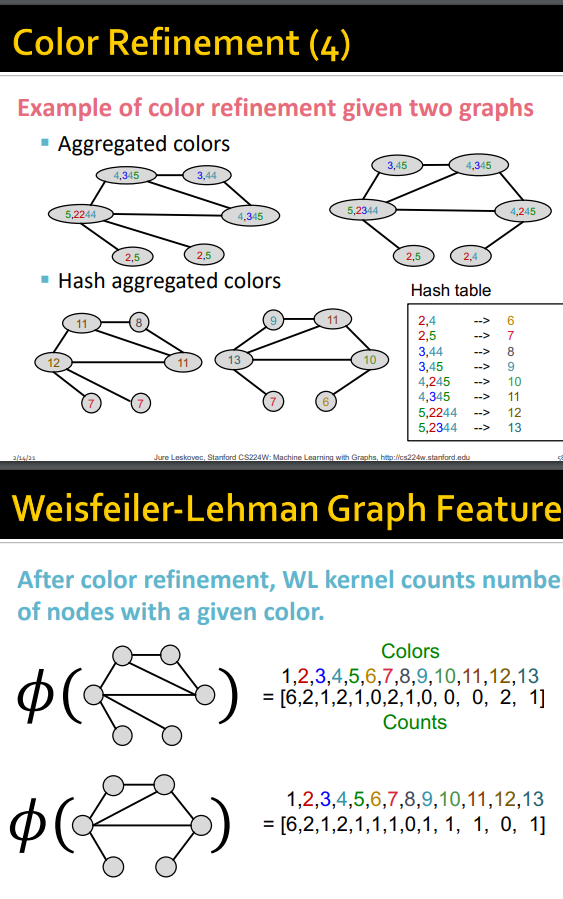
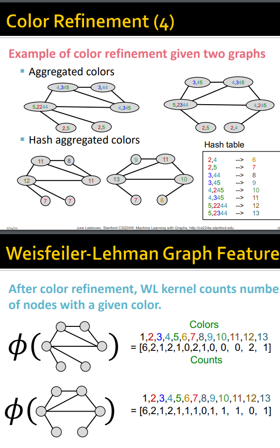

Machine Learning with Graphs
Graph Neural Networks and Applications
1.1 - Why Graphs?
Graphs are a general language for describing and analyzing entities with relations or interactions.
Many types of data can naturally be represented by graphs - e.g., disease pathways, food webs, and underground networks. Similarly, social networks, citation networks, and the internet can also inherently be represented as graphs. The power in graphs is that we can represent knowledge and facts as relationships between different entities - for example, the regulatory mechanisms in our cells can be described as processes governed by the connections between different entities.
Consider two types of domains that can be represented graphically:
- Networks (or Natural Graphs):
- social networks
- communication and transactions
- biomedicine (interactions between genes and proteins)
- brain connections
- Graphs:
- information or knowledge
- software
- similarity networks
- relational structures
The key question we’d like to address is: how do we take advantage of relational structure in order to make better predictions?
- Complex domains often have a rich relational structure, which can be represented as a relational graph. And, by modeling relationships in such a way, we can achieve better predictive performance.
The difficulty of using graphical data lies in their complexity - they are arbitrarily-sized and have complex topological structures, unlike text or image data. So, we would like to construct neural networks that are generalizable to graphs - neual networks that take a graph as input, and ultimately output predictions.
In particular, we would like to implement representation learning, where embeddings are generated to capture both structural and feature-related information from the graph (in place of feature engineering in classical ML algorithms).
- In representation learning, we map nodes to \(d\)-dimensional embeddings such that similar nodes in the network are embedded in close proximity in \(d\)-dimensional space.
- So, the aim is to learn the function \(f\) that takes each node \(u\) and maps it to their \(d\)-dimensional embeddings, i.e., \(f: u \to \mathbb{R}^d\), such that “similar” nodes in the graph are also close to each other in space.
- In representation learning, we map nodes to \(d\)-dimensional embeddings such that similar nodes in the network are embedded in close proximity in \(d\)-dimensional space.
1.2 - Applications of Graph ML
Representing data as graphs allows us to formulate tasks at different levels:
- node-level
- A classic node-level task is node classification - predicting the property of a node, such as categorizing online users or items.
- edge-level
- A classic edge-level task is link prediction - predicting whether there are missing links between a pair of nodes.
- community (subgraph) level
- A classic community-level task is clustering or community detection - identifying closely-linked subparts of a graph where nodes are densely-connected; e.g., social circle detection.
- graph-level
- A classic graph-level task is graph classification - categorizing different graphs; e.g., representing molecules as graphs, and predicting properties of molecules.
Node-level ML Application Examples
In node-level tasks, the aim is, for each node in the graph, to predict its position in space.
Protein folding: given a sequence of amino acids, predict the 3D structure of the underlying protein.
- This problem was addressed by Deepmind’s AlphaFold.
- The key idea that made AlphaFold possible was to represent the protein as a spatial graph where nodes were amino acids, and edges represented proximity between amino acids. By training a GNN on this data, the folding of a protein was able to be simulated by predicting the final positions of amino acids.
Edge-level ML Application Examples
In edge-level tasks, the aim is to understand the relationships between different nodes.
Recommender systems: think of such systems as users interacting with items, where “items” is a broad term that can emcompass products, movies, songs, etc. The goal of a recommender system is to recommend items that a specific user might like, based on the structure of the graph, as well as the properties of the users and the items.
- Nodes: users and items
- Edges: user-item interactions The key insight is that we can learn how to embed or represent nodes such that related nodes are embedded closer to each other than nodes that are not related.
Predicting drug side effects: many patients take multiple drugs simultaneously to treat complex or co-existing diseases. The interactions between these many drugs may cause adverse side effects. As such, the goal of this problem is, given an arbitrary pair of drugs, to predict how they interact and cause side effects.
- Nodes: drugs and proteins
- Edges: interactions
Subgraph-level ML Application Examples
Traffic prediction: predicting travel time from one location to another based on traffic conditions on the road segments between those destinations.
- Nodes: road segments
- Edges: connectivity between road segments
Graph-level ML Application Examples
Drug discovery: representing antibiotics (molecules) as small molecular graphs, with the aim of predicting which molecules have therapeutic effects (molecule prioritization for testing in the lab).
- Nodes: atoms
- Edges: chemical bonds
Generating novel molecules via graph generation: generating molecules as graphs in a targeted way, and optimizing existing moelcules to have desirable properties.
Physical simulation: representing different materials as a set of particles, and use a graph to capture how to particles interact with each other, in order to ultimately predict how the materal deforms.
1.3 - Choice of Graph Representation
Graphs (or networks) are composed of:
- objects: nodes or vertices, denoted \(N\) or \(V\)
- interactions: links or edges, denoted \(E\)
- the entire system: the network or graph itself - a set of nodes and edges, denoted \(G(N, E)\)
Graph are versatile - we can represent connections between, say, actors, friends, proteins, and more. As the underlying structure of these graphs are essentially the same, the same ML algorithms can be used to analyze them.
- But, it is important to choose the correct network - the choice of nodes and edges is crucial, as it ultimately determines the nature of the question we are able to study.
Directed vs Undirected Graphs
Undirected graphs have undirected links, meaning they are useful in modeling symmetric or reciprocal relationships.
Directed relationships are captured by directed links, where every link has a direction, source, and destination. * e.g., financial transactions
Node Degrees
Given that we have an undirected graph, we can explore the notion of node degrees, which denotes the number of edges adjacent to a given node.
It follows that the average node degree is given by the following, which can be simplified to be twice the number of edges in the network divided by the number of nodes.
\(\bar k = \frac 1 n \sum^N_{i=1} k_i = \frac {2E} N\)
In directed networks, we define an in-degree and an out-degree, where the in-degree is the number of edges pointing towards the node, while the out-degree is the number of edges pointing outwards from the node.
Bipartite Graphs
Bipartite graphs are a popular type of graph structure - they are graphs whose nodes can be divided into two disjoint sets \(U\) and \(V\) such that every edge connects a node in \(U\) to one in \(V\) - i.e., \(U\) and \(V\) are independent sets.
Every node only interacts with the other type of node, but not the other.
- E.g., authors-to-papers, actors-to-movies, recipes-to-ingredients, customers-to-products
We can also define the concept of folded or projected networks. The idea of folded networks is that, if we have a bipartite graph, we can then project it to either side (using only the nodes from one side) to create a projection graph where nodes are connected if they have at least one neighbour in common.
- e.g., if we have a bipartite graph that connects authors to scientific papers, we can create a folded network that becomes a co-authorship network, i.e., authors (nodes) are connected if they co-authored at least one paper in common.
Representing Graphs
Adjacency Matrix
One way to represent a graph is via an adjacency matrix, which is a square binary matrix \(A\) whose elements indicate whether pairs of nodes are adjacent in the graph.
- \(A_{ij} = 1\) if there is a link from node \(i\) to node \(j\); \(A_{ij} = 0\) otherwise.
- Note that adjacency matrices of undirected graphs are inherently symmetric, as node \(i\) being connected to node \(j\) automatically means the inverse is also true. However, adjacency matrices of directed graphs are not symmetric.
The representation of adjacency matrices means that we can compute node degrees by simply summing across a given row or column of the matrix.
- For undirected graphs, the row and column sum for a given node is the same.
- For nodes of directed graphs, in-degrees are computed by the sum of the columns, while out-degrees are given by the sum of the rows.
In real-world networks, adjacency matrices are very sparse, which has consequences for the properties of the matrices.
- e.g., in a social network that connects people to their friends, the maximum degree that a given node can have is every other human - but it is of course impossible to have 7 billion friends, and so the adjacency matrix of such a problem would be very sparse, since every person’s number of friends is on the order of tens or hundreds and not billions.
Edge List
Another way to represent graphs is to use an edge list - a list of pairs of edges. This representation is popular in deep learning frameworks, because it allows us to represent graphs as a 2-dimensional matrix.
- However, the difficulty of such a representation is that it becomes hard to do graph manipulation or any sort of analysis in the graph - even computing the degree of a node becomes non-trivial.
Adjacency List
If graph manipulation and analysis is needed, a preferred graph representation to an edge list is an adjacency list, which associates each node with a list of its neighbours.
- These are easier to work with for large and sparse networks.
Node and Edge Attributes
Nodes and edges (entire graphs as well) can be associated with attributes or properties. Some examples:
- weights (as an indication of frequency)
- rankings (best friend, second best friend)
- type (friend, relative, co-worker)
Some properties can be directly represented in adjacency matrices. For example, if edges are weighted, the corresponding value in the adjacency matrix is simply multiplied by that weight.
More Types of Graphs
Some graphs may have self-edges or self-loops, where nodes are connected to themselves. On the adjacency matrix, self-loops are represented by entries on the diagonal of the matrix.
Some graphs are known as multigraphs, where multiple edges are allowed between a pair of nodes. These graphs can be thought of as a weighted graph, where the entries in the adjacency matrix are non-binary, but it is oftentimes useful to represent the edges individually, as they may have varying properties.
Connectivity
Undirected Graphs
A graph is connected if any pair of nodes on the graph can be joined by a path. A disconnected graph is made up by two or more connected components, and may have isolated nodes.
There is a useful distinction in adjacency matrices of connected and disconnected graphs. When a graph is disconnected (i.e., has several components), its adjacency matrix can be written in a block-diagonal form, where its nonzero elements are confined in a square area, and all other elements are zero (i.e., there is no connectivity between the components).
Directed Graphs
The notion of connectivity also generalizes to connected graphs - here, we talk about strong vs weak connectivity.
- A weakly connected directed graph is a graph that is connected if the directions of the edges are ignored, i.e., each node is connected to another node in some way.
- A strongly connected directed graph is a graph where there exists a directed path between every pair of nodes; i.e., there is a path from node A to node B, as well as from node B to node A.
We can also speak of strongly-connected components (SCCs), which are sets of nodes in a graph such that every node in the set can visit another node via a directed path.
Traditional Feature-based Methods of ML
The traditional ML pipeline centers around designing the correct features. In particular, we can think about 1) node attributes and 2) structural features that describe how a particular node is positioned within the network.
Using effective features is the key to achieving good test performance for node-level, edge-level, and graph-level predictions.
Given that our goal is to make predictions for a set of objects, we must make the following design choices:
- features: \(d\)-dimensional vectors
- objects: nodes, edges, sets of nodes, entire graphs
- objective function: what task are we aiming to solve?
More explicitly, our task is: given a graph \(G = (V, E)\), we would like to learn a function \(f: V \to \mathbb{R}\) that makes predictions. The question becomes how we learn this function \(f\).
2.1 - Node-Level Tasks and Features
A common node-level task is node classification, where we would like to assign a category or label to each unlabeled node in a graph.
- In the below example, green nodes have at least two edges, while red nodes have just one.
As seen in the above example, the category of a node is often dependent on how it lies in a network, and as such, we need features that characterize the structure and position of the node in its network and describe its topological pattern. Four approaches to this:
Node degree
- The node degree \(k_v\) of node \(v\) is defined as the number of edges, or neighbouring nodes, the node has.
- A key limitation of this is that it treats all neighbouring nodes equally without capturing their importance.
Node centrality
- A more generalized version of node degree is node centrality, denoted \(c_v\), which takes the node importance in a graph into account.
- There are many ways to model node importance:
Eigenvector centrality: a node \(v\) is important if it is surrounded by important neighbouring nodes \(u \in N(v)\).
- The importance of a given node is given by \(c_v = \frac 1 \lambda \sum_{u \in N(v)} c_u\), where \(\lambda\) is some positive constant. This can also be expressed as an eigenvector problem \(\lambda c = Ac\), where \(A\) is the adjacency matrix where \(A_{uv} = 1\) if \(u \in N(v)\), and \(c\) is the centrality vector. This comes down to determining the eigenvector \(c\) associated with the eigenvalue (given) \(\lambda\). People tend to take the leading eigenvector \(c_{max}\) that is associated with the largest eigenvalue \(\lambda_{max}\) (which is always positive and unique by Perron-Frobenius Theorem) as a measure of centrality for nodes.
- “The more important my friends are, the higher my own importance is.”
Betweenness centrality: a node is important if it lies on many shortest paths between other nodes; a node is important if it is an important bridge between other nodes.
- The importance of a given node is given by \(c_v = \sum_{s \neq v \neq t} \frac {\textnormal{num. shortest paths between s and t that contain v}} {\textnormal{num. shortest paths between s and t}}\)
- Measures how good a connector or transit point a given node is
Closeness centrality: a node is important if it has small shortest path lengths to all other nodes in the network.
- The more central you are, the shorter the path to everyone else, and hence the more important you are.
- Given by \(c_v = \frac 1 {\sum_{u \neq v} \textnormal{shortest path length between u and v}}\) - the closer to the center the node is, the smaller the sum in the denominator will be, which results in a larger measure of importance.
Clustering coefficient
- The clustering coefficient measures how connected a given nodes’ neighbours are, and is given by \(e_v = \frac {\textnormal{num. edges among neighbouring nodes of v}} {k_v \choose 2} \in [0, 1]\), where \(k_v \choose 2\) represents the number of node pairs amongst \(k_v\) (the degree) neighbouring nodes. This metric measures how actual edges there are out of how many potential edges there could be, and hence it is between 0 and 1.
- e.g., a value of 0 could mean that none of your friends know each other, while a value of 1 means that all of your friends know each other.
Graphlets
- We can generalize the notion of the clustering coefficient to that of graphlets, based on the observation that the clustering coefficient is essentially counting the number of triangles in the ego-network of a node.
- The ego-network of a node is a network induced by the node itself and its neighbours (the degree-1 neighbourhood around a given node).
- Graphlets are rooted connected non-isomorphic subgraphs (they count shapes beyong triangles) on a larger graph.
- We can define a graphlet degree vector (GDV), which counts the number of graphlets that a node touches. This is ultimately a count vector of graphlets rooted at a given node. These help characterize the local neighbourhood structure around the node of interest based on the frequency of the graphlets that the given node participates in.
- E.g., if we were to consider graphlets on 2-5 nodes, we would get a vector of 73 coordinates that describes the topology of a node’s neighbourhood, capturing its interconnectivities out to a distance of 4 hops.
- GDVs provide a measure of a node’s local network topology; comparing vectors of two nodes provides a more detailed measure of local topological similarity than if we were to just look at node degrees or clustering coefficient.
- We can define a graphlet degree vector (GDV), which counts the number of graphlets that a node touches. This is ultimately a count vector of graphlets rooted at a given node. These help characterize the local neighbourhood structure around the node of interest based on the frequency of the graphlets that the given node participates in.
- We can generalize the notion of the clustering coefficient to that of graphlets, based on the observation that the clustering coefficient is essentially counting the number of triangles in the ego-network of a node.
Importance-based features, such as node degree and node centrality, help capture the importance of a node in a graph, which becomes useful in predicting influential nodes in a graph (e.g., predicting celebrity users in a social network).
Structure-based features, such as node degree, clustering coefficient, and graphlet degree vectors, help capture the topological properties of a local neighbourhood around a node. This is useful in predicting the particular role that a given node plays in a graph (e.g., predicting protein functionality in a protein-protein interaction network).
2.2 - Link Prediction and Link-level Features
The task of link prediction is to predict new links based on existing links in the network, meaning that at test time, all node pairs who are not already linked are ranked, and the top \(K\) node pairs are predicted. So, the key is to design features for a pair of nodes.
The link prediction task can be approached in two ways:
- Removing random links from the network
- A random set of links are removed from the network, and we aim to predict them
- This is useful for networks that are static
- Predict links over time
- If we have a network that inherently evolves over time, we look at the graph between two times, and based on the edges and the structure of the graph between this time, we output a ranked list \(L\) of links that are predicted to appear in a future time.
- This is useful for transaction or social networks that change over time
In link prediction, we ultimately want to compute a score \(c(x,y)\) for each pair of nodes \((x,y)\), where \(c(x,y)\) could be something like the number of common neighbours of \(x\) and \(y\), and then to sort the pairs of nodes by decreasing \(c(x,y)\) score. * The top \(n\) pairs are predicted as the new pairs who will appear in the network.
The aim in generating link-level features is to describe the relationship between two nodes, such that this relationship allows us to predict whether there exists a link between them or not. Link-level features can be produced in several ways.
Distance-based features
- The shortest-path distance between two nodes - although this does not capture the degree of neighbourhood overlap
Local neighbourhood overlap
- Captures the number of neighbouring nodes shared between two nodes \(v_1\) and \(v_2\). Many different metrics can be applied:
- Common neighbours: the number of common neighbours shared by the two nodes, computed via \(|N(v_1) \cap N(v_2)|\). Nodes with higher degrees are more likely to have neighbours with each other, and so normalizing is useful.
- Jaccard’s coefficient: a normalized version of common neighbours - the size of the intersection divided by the size of the union: \(\frac {|N(v_1) \cap N(v_2)|} {|N(v_1) \cup N(v_2)|}\)
- Adamic-Adar index: the sum of the inverse logarithmic degree - the basis of this is that if a node has a lot of neighbours, then the importance of those neighbours is less than if they had few neighbours. This is derived via \(\sum_{u \in N(v_1) \cap N(v_2)} \frac 1 {\textnormal{log}(k_u)}\).
- Analogy: having a bunch of lesser-connected friends is better than having a bunch of friends with tons of connections to other people (in terms of the importance those friends place on you)
- The limitation of local neighbourhood features, though, is that the metric will always return zero if two nodes have no neighbours in common, despite the possibility that those nodes may still be connected in the future - if the nodes are more than two hops apart, their score will be zero.
- Captures the number of neighbouring nodes shared between two nodes \(v_1\) and \(v_2\). Many different metrics can be applied:
Global neighbourhood overlap
- Expands upon local neighbourhood features by considering the entire graph.
- Katz index: counts the number of paths of all lengths between a given pair of nodes
- We can use a graph adjacency matrix to compute the number of paths between two nodes. The problem of finding the number of paths reduces down to taking powers of the adjacency matrix - recall that if nodes \(u\) and \(v\) are connected, then \(A_{uv} = 1\). If we let \(P_{uv}^{(K)}\) denote the number of paths of length \(K\) between nodes \(u\) and \(v\), then it can be shown that \(P_{uv}^{(K)} = A^K\). If we wanted to compute \(P_{uv}^{(2)}\), i.e., the number of paths of length 2 between \(u\) and \(v\), we decompose the problem into two steps:
- Compute the number of paths of length 1 between \(u\)’s neighbours and \(v\)
- Find the sum of those numbers of paths across \(u\)’s neighbours
- The Katz index sums over all path lengths for a given set of nodes, and is computed via \(S_{v_1, v_2} = \sum_{l=1}^{\infty} \beta^l A^l_{v_1, v_2}\), where \(0<\beta<1\) is a discount factor that gives lower importance to paths of longer lengths. This can be computed in closed-form as so: \(S = \sum^{\infty}_{i=1} \beta^iA^i = (I - \beta A)^{-1} - I\), as it is simply a geometric series for matrices. The entries of \(S\) will give the Katz score for any pair of nodes.
- We can use a graph adjacency matrix to compute the number of paths between two nodes. The problem of finding the number of paths reduces down to taking powers of the adjacency matrix - recall that if nodes \(u\) and \(v\) are connected, then \(A_{uv} = 1\). If we let \(P_{uv}^{(K)}\) denote the number of paths of length \(K\) between nodes \(u\) and \(v\), then it can be shown that \(P_{uv}^{(K)} = A^K\). If we wanted to compute \(P_{uv}^{(2)}\), i.e., the number of paths of length 2 between \(u\) and \(v\), we decompose the problem into two steps:
2.3 - Graph-level Features and Graph Kernels
The goal here is that we want features that characterize the structure of an entire graph. We can do this by using kernel methods, which are widely used in traditional machine learning.
In kernel methods, the idea is to design kernels instead of feature vectors, where a kernel \(K(G, G')\) between two graphs measures the similarity between those two graphs (their data points). A kernel matrix \(K = (K(G, G'))_{G,G'}\), then, measures the similarity between all pairs of data points or graphs. * In order for a kernel to be valid, the kernel matrix must be positive semidefinite, meaning it has positive eigenvalues and is symmetric. * There exists a feature representation \(\Phi(*)\) such that \(K(G, G') = \Phi(G)^T \Phi(G')\) - i.e., the the kernel between two graphs is simply the dot product of the feature representations of each individual graph. * Once the kernel is defined, off-the-shelf ML models, such as the kernel SVM, can be used to make predictions.
Many graph kernels - which measure similarity between two graphs - exist. Common examples are the graphlet kernel and the Weisfeiler-Lehman kernel, and other examples proposed in literature are the random-walk kernel, the shortest-path graph kernel, and more.
The basis of graph kernels is to design some graph feature vector \(\Phi(G)\). We can apply a bag-of-words (BoW) representation of a graph, where we regard nodes as words. However, note that graphs can have many structures that result in the same BoW feature vectors. So, an enhanced version of this is to use a bag-of node degrees method, in which a graph is represented as a feature vector of its node degress (e.g., [1, 3, 0] means 1 node of degree 1, 3 nodes of degree 2, 0 nodes of degree 3). Both the graphlet kernel and the Weisfeiler-Lehman kernel use this idea of bag-of-* representations of graphs, where * is something more sophisticated than node degrees.
Graphlet kernel: representing a graph as the count of the number of different graphlets in a graph.
- Graphlets here differ from that of node-level graphlets - here, they do not need to be rooted, and do not need to be connected.
- Given a graph \(G\), and a graphlet list \(g_k = (g_1, g_2, ..., g_{n_k})\), we define the graphlet count vector \(f_G \in \mathbb{R}^{n_k}\) as \((f_G)_i = \textnormal{num.} (g_i \subseteq G)\) for \(i = 1,2,...,n_k\) - the number of instances of a given graphlet that appears in our graph of interest.
- Given two graphs, the graphlet kernel can simply be computed as the dot product between the graphlet count vectors of each graph, i.e., \(K(G, G') = f_G^Tf_{G'}\).
- However, the two graphs may have different sizes, and computing the kernel as such may skew the value. As such, this can be addressed by normalizing each feature vector - each feature vector can be represented as a vector of the count of individual graphlets divided by the total number of graphlets that appear in the graph: \(h_G = \frac {f_G}{\textnormal{sum}(f_G)}\), and then the kernel is computed as \(K(G, G') = h_G^Th_{G'}\).
- A key limitation of the graphlet kernel is that counting graphlets is an expensive task - counting size-\(k\) graphlets for a graph with size \(n\) by enumeration is \(O(n^k)\).
Weisfeiler-Lehman kernel: aims to address inefficiencies of the graphlet kernel by using neighbourhood structure to iteratively enrich node vocabulary.
- This is a generalized version of the bag-of node degrees method.
- The algorithm used to achieve this is known as color refinement.
- Given a graph \(G\) with a set of nodes \(V\), an initial color \(c^{(0)} (v)\) is assigned to each node \(v\), and then node colors are iteratively refined by hashing (mapping different inputs to different colors) to create new colors: \(c^{k+1}(v) = \textnormal{HASH}({c^{k}(v), {c^{k}(u)}_{u \in N(v)}})\). Then, after \(K\) steps of color refinement, \(c^{K}(v)\) summarizes the structure of the graph within a \(K\)-hop neighbourhood.
- As more iterations are done, the node gathers color information from nodes farther away in the network.
- After color refinement, the Weisfeiler-Lehman kernel counts the number of ndoes with a given color to produce the ultimate feature vector. Then, the Weisfeiler-Lehman kernel value is found by computing the inner product of the color count vectors.
- The Weisfeiler-Lehman kernel is popular as it is useful and computationally efficient - its time complexity is linear in the number of edges, as it involves aggregating neighbouring colors.
- When computing a kernel value, only the colors who appear in the two graphs need to be tracked, and hence the number of colors is at most the total number of nodes.
- Counting colors is also linear with respect to the number of nodes.
- The total time complexity is linear in the number of edges.
 
